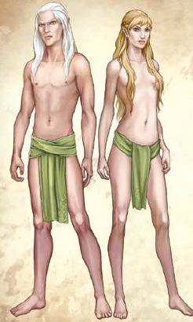

In Aventurien wird viel über die Herkunft der Elfen spekuliert. Sie selbst behaupten, sie seien in den Wäldern der Salamandersteine aus dem Licht ins Sein der Welt getreten - und ihr lebendiges Geschichtsbuch, das Faedhari, kennt viele Legenden darüber.
Die Elfen sind ein magisches Volk, dem die Benutzung von Zauberei bereits in die Wiege gelegt ist. Vor Jahrtausenden herrschten die Hochelfen über weite Teile Aventuriens, doch ihre Zeit ist lange vorbei. Ungewiss ist, welche Katastrophe die Teilung der ursprünglich geeinten Elfenvölker in die Völker verursacht hat, die wir heute kennen: Die der Au-, Firn-, Wald- und Steppenelfen. Eine vermutete Verbindung zu den blasshäutigen Nachtalben, die im hohen Norden fern der Sonne leben und sich selbst Shakagra nennen, wird von den Elfen aller anderen Völker mit großer Bestürzung quittiert.
Heutzutage haben sich die meisten Elfen weit von den Fährnissen des Weltgeschehens zurückgezogen. Sie leben in Sippengemeinschaften in der Tiefe der Wälder, den lieblichen Auen, dem ewigen Eis und den weiten Steppen des Nordens und versuchen, ein Leben im Einklang mit sich und der Welt zu führen. Rein elische Siedlungen indet man zumeist fernab der Zivilisation und der Menschen.
Den Firnelfen gelingt es, im eisigen Norden zu überleben. Die Grimmfrostöde ist ihre erwählte Heimat, wo sie ihren ewigen Kampf gegen die verhasste Schwarzelfe 6Pardona und ihre Schergen führen.
Die für ihre Reitkünste berühmten Steppenelfen haben sich die Grüne Ebene als Heimat auserkoren. Den dort umherziehenden Nivesensippen begegnen sie misstrauisch bis freundlich, während sie mit den Goblins immer wieder erbitterte Kämpfe führen.
Die Waldelfen, das ursprünglichste aller Elfenvölker, widerstanden einst den Verlockungen der Hochelfenstädte und leben noch immer im Schutz der Wälder in den Salamandersteinen, der ursprünglichen Heimstatt aller Elfenvölker.
Am ehesten wird ein Mensch wohl auf Auelfen stoßen. Diese leben an den Flüssen und Seen Nordaventuriens, vor allem rund um die Salamandersteine sowie in einigen Teilen Albernias, Almadas und des Horasreiches. Sie sind das größte Elfenvolk Aventuriens, das durch seine weite Verbreitung das Elfenbild der Menschen am deutlichsten geprägt hat. Einige von ihnen haben sogar das Leben in der Sippe aufgegeben und sind in den Städten der Menschen sesshaft geworden. Aus der Verbindung von Elf und Mensch gehen die sogenannten Halbelfen hervor. Entgegen dem landläuigen Aberglauben ist es einerlei, ob der Vater oder die Mutter von elischem Blut ist. Je nachdem, in welcher Kultur er aufwächst, fühlt sich der Halbelf dem einen oder anderen Erbe mehr verplichtet. Die leicht angespitzten Ohren weisen ihn deutlich als Mischling aus und so droht einem Halbelfen oft das Schicksal, ein Fremder beider Welten zu sein, der weder hier noch dort vollwertige Aufnahme und Anerkennung erfährt.
Auch wenn Elfen auf den ersten Blick Menschen ähneln können, gibt es doch auffällige Unterschiede. Ihre Ohrmuscheln laufen spitzer zu und sind deutlich länger als bei einem Menschen. Eine weitere Besonderheit sind ihre Augen, die etwas größer sind als die der Menschen. Vor allem ist es die Farbe, die jedem Betrachter auffällt: Von saphirblau bis smaragdgrün funkeln ihre Augen in allen nur erdenklichen Edelsteinfarben und häuig indet man sogar metallisch schimmernde Einsprengsel darin, zumeist in Gold oder Silber. Vom Wuchs her sind Elfen schlanker und größer als Menschen, zwei Schritt sind keine Seltenheit. Man sagt ihnen große Gewandtheit und Eleganz sowie eine empindliche Nase nach. Elfen gelten gemeinhin als Auswuchs an Schönheit, weil ihre von Symmetrie geprägte Gestalt oftmals deutlich ebenmäßiger wirkt als die der Menschen. Kombiniert mit ihrer Gelassenheit und einer geradezu ätherischen Weltfremdheit, prägt dies das Bild des klassisch schönen Elfen. Sie kennen keinerlei Aufgabentrennung nach Geschlecht, hier zählen vor allem Fähigkeit und Berufung, und man sagt ihnen nach, dass sie weitaus freier leben und lieben als viele der anderen Völker. Elfen sterben nicht an Altersschwäche, sondern erst, wenn sie ihre Lebensaufgabe erfüllt haben. Ihre Lebensspanne kann daher mehrere hundert Jahre umfassen. Jeder Elf scheint einem anderen Lebensziel zu folgen, das sich ihm erst im Laufe der Jahre offenbart. Bis zur Erfüllung dieser Aufgabe altern Elfen nach Erreichen des Erwachsenenalters äußerlich nicht. Haben sie jedoch den Sinn ihres Daseins erfüllt, altern und vergehen sie binnen weniger Tage. Nur wenig fürchten sie mehr als das badoc, ein Wort das am ehesten mit „Verweltlichung“ übersetzt werden kann. Wer ihm nachgibt, der entfernt sich Schritt für Schritt vom Licht und damit vom „Elfsein“.